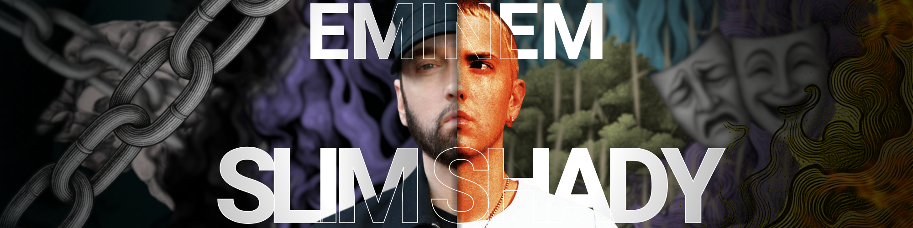

Hip Hop
Tupac Shakur: O Poeta do Caos e da Esperança

Eminem: O Arquiteto das Rimas e o Anti-Herói do Pop

Rock
Iron Maiden: Os Guardiões do Metal e da História

Linkin Park: A Voz de uma Geração em Conflito
O Artista: O Arquiteto da Alma e do Tempo
A música, em sua essência física, é apenas uma sucessão de frequências e silêncios. O que a transforma em uma força capaz de derrubar muros ou curar corações é a presença do artista. Se os gêneros são os mapas, os artistas são os exploradores que se recusam a seguir as trilhas demarcadas, preferindo abrir novos caminhos através de sua própria vulnerabilidade e genialidade. A importância de figuras como Freddie Mercury, Tupac Shakur ou Steve Harris vai muito além da capacidade de vender discos ou lotar estádios. Eles atuam como tradutores de sentimentos universais. O Artista como Espelho e Farol Um grande artista cumpre dois papéis fundamentais na sociedade: O Espelho: Ele reflete a realidade, muitas vezes de forma crua e desconfortável. Quando o Hip-Hop narra a dor das ruas ou o Rock grita contra a opressão, o artista está forçando o mundo a olhar para si mesmo. Eles dão voz àqueles que o sistema tenta silenciar. O Farol: Ele ilumina o futuro. Através da inovação estética — como o uso pioneiro de sintetizadores ou a complexidade de rimas multissilábicas — os artistas expandem os limites do que consideramos possível. Eles nos mostram que a identidade não é estática, mas algo que podemos criar e recriar. A Imortalidade através da Obra O que torna o artista essencial é a sua capacidade de transcender o tempo. Um mestre do palco como Mercury continua a reger multidões décadas após sua partida; a poesia de Tupac permanece relevante em cada novo movimento social; a técnica de Eminem dita o padrão para cada jovem que decide escrever um verso hoje. Músicos passam, mas os artistas permanecem. Eles são os guardiões da memória afetiva da humanidade. Sem eles, a música seria apenas som; com eles, ela é a prova de que estivemos aqui, de que sentimos, de que lutamos e de que, acima de tudo, fomos ouvidos.
"A arte é o que nos permite não morrer da verdade."Friedrich Nietzsche.